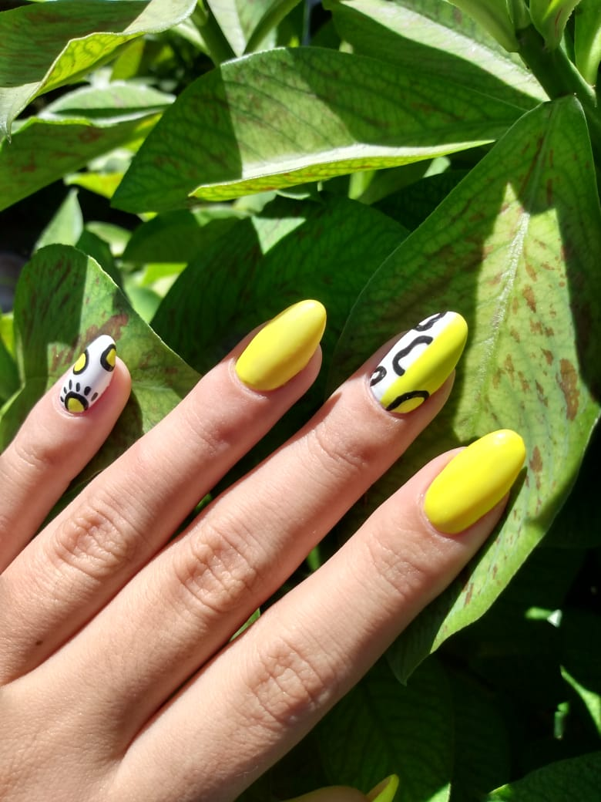
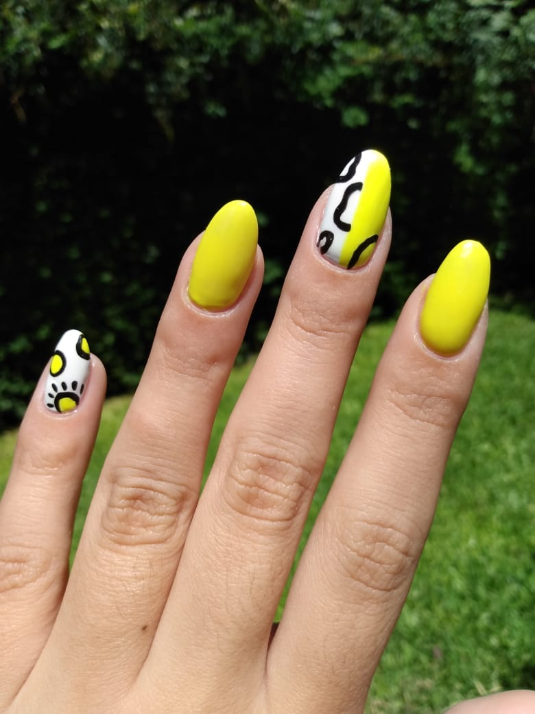

¿Cómo surgió ODNails? ODNails nació de un pequeño emprendimiento, en un rincon de mi casa, de el amor al arte y a mis ganas de plasmarlo en las uñas. Gracias a esto hoy contamos con tres de las sucursales más reconocidas en el rubro, ubicadas en Pilar centro, Palermo Soho y San Isidro.


¿Quiénes somos? El equipo detrás de ODNails está conformado por Ornella (CEO) y Ezequiel (Co-CEO), 22 años ambos, nativos de Argentina, Buenos Aires.